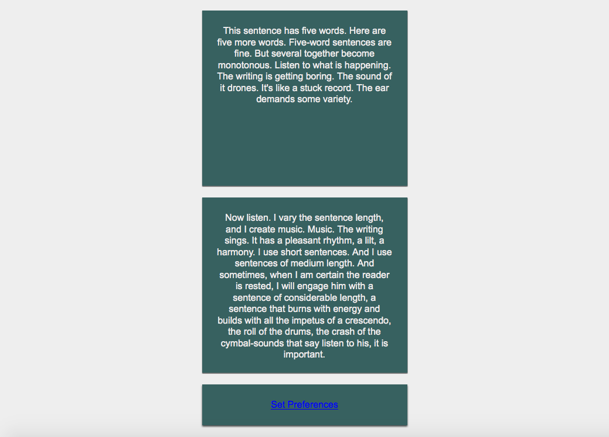
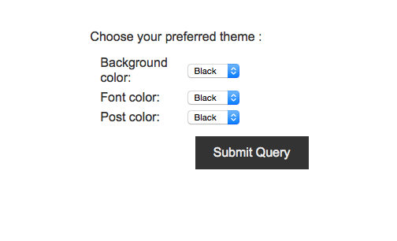
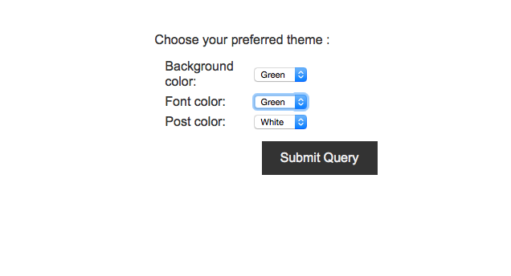
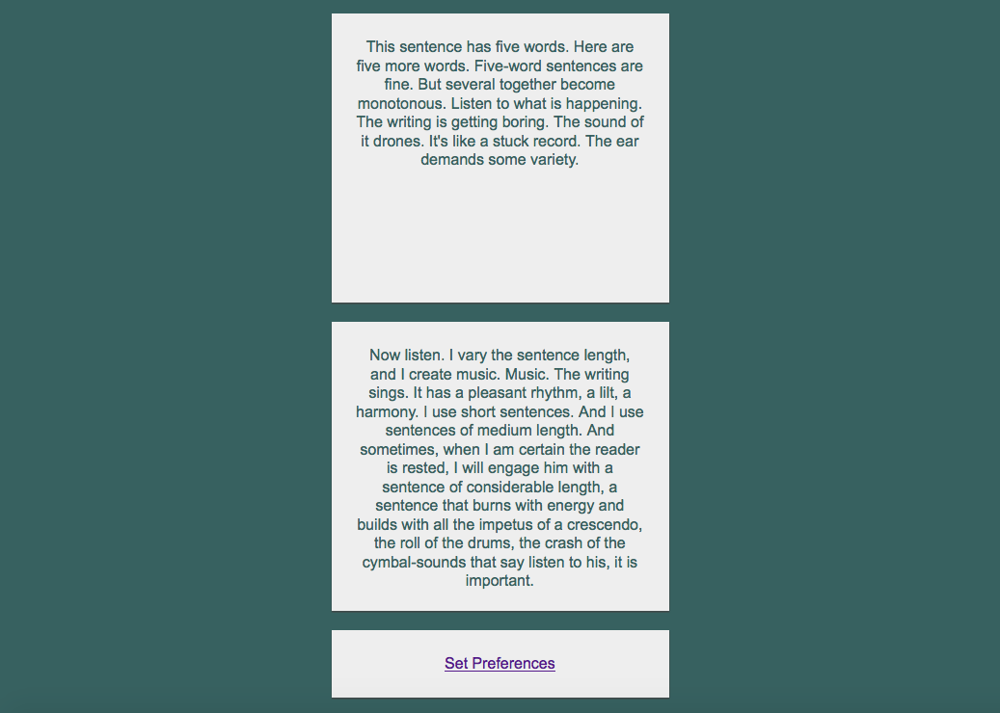

You will create a simple site that shows at least 2 posts of text. Somewhere in the page is a link to Set Preferences.

/preferences.
When the user clicks on the Set Preferences, they will be directed to a page where they can set the

For all three preferences, the user can set the colors to either
Let's say the user chose these set of preferences.

The user will see these colors in return.

These coloring scheme will remain for a day, even after the user closes the browser.
| Item | Points |
|---|---|
| At least two notes are present | 3 |
| User can set preferences | 5 |
| Cookies are added to remember preferences | 10 |
| Cookies are read to remember preferences | 10 |